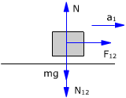
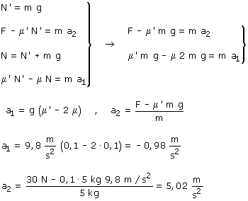

Si los bloques tienen aceleraciones diferentes no sirve para nada utilizar el c.d.m, hay que estudiar los bloques por separado
|
|
|
Las fuerzas N12, N21 (Acción y reacción) tienen el mismo módulo: N' Las fuerzas F12, F21 (Fuerza de rozamiento) tienen el mismo modulo: μN' (Módulo de la fuerza de rozamiento cuando hay movimiento relativo entre los bloques) |
 |
|


Combinando las ecuaciones obtenidas resulta un sistema de incógnitas: a1, a2

La aceleración negativa del bloque 1 indica que este no se mueve porque lo sujeta el rozamiento con el suelo. Únicamente se moverá el bloque 2